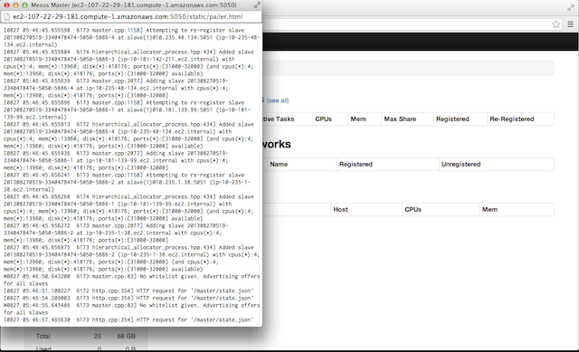
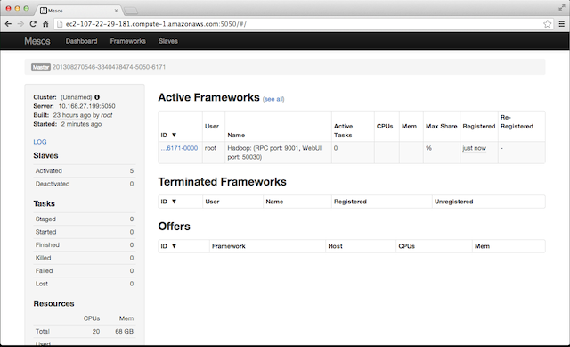
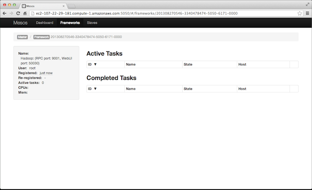
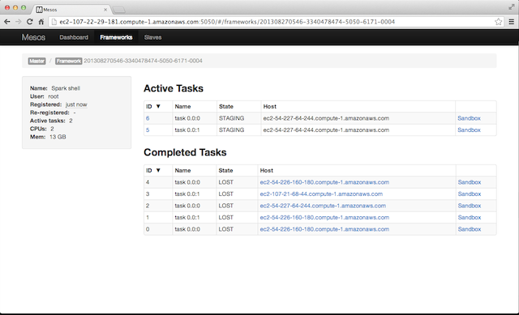
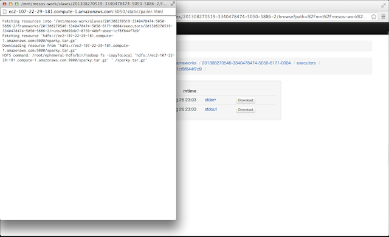

Apache Mesos is a cluster manager that makes building and running distributed systems, or frameworks, easy and efficient. Using Mesos you can simultaneously run Apache Hadoop, Apache Spark, Apache Storm,k and many other applications on a dynamically shared pool of resources (machines).
Mesos itself is a distributed system made up of masters and
slaves. You should have been given master_node_hostname at the
beginning of this training, or you might have launched your own
cluster and made a note
of it then.
Let’s start by logging into master_node_hostname:
$ ssh -i /path/to/ampcamp3-all.pem root@master_node_hostname
Command Line Flags
The master and slaves can be configured using command line
flags. There is not a configuration file for Mesos, but any command
line flag can be passed via an environment variable prefixed with
MESOS_.
-
Use
--helpto see the available flags:$ mesos-master --help
Usage: mesos-master [...] Supported options: --allocation_interval=VALUE Amount of time to wait between performing (batch) allocations (e.g., 500ms, 1sec, etc) (default: 1secs) --cluster=VALUE Human readable name for the cluster, displayed in the webui --framework_sorter=VALUE Policy to use for allocating resources between a given user's frameworks. Options are the same as for user_allocator (default: drf) --[no-]help Prints this help message (default: false) --ip=VALUE IP address to listen on --log_dir=VALUE Location to put log files (no default, nothing is written to disk unless specified; does not affect logging to stderr) --logbufsecs=VALUE How many seconds to buffer log messages for (default: 0) --port=VALUE Port to listen on (default: 5050) --[no-]quiet Disable logging to stderr (default: false) --roles=VALUE A comma seperated list of the allocation roles that frameworks in this cluster may belong to. --[no-]root_submissions Can root submit frameworks? (default: true) --slaves=VALUE Initial slaves that should be considered part of this cluster (or if using ZooKeeper a URL) (default: *) --user_sorter=VALUE Policy to use for allocating resources between users. May be one of: dominant_resource_fairness (drf) (default: drf) --webui_dir=VALUE Location of the webui files/assets (default: /usr/local/share/mesos/webui) --weights=VALUE A comma seperated list of role/weight pairs of the form 'role=weight,role=weight'. Weights are used to indicate forms of priority. --whitelist=VALUE Path to a file with a list of slaves (one per line) to advertise offers for; should be of the form: file://path/to/file (default: *) --zk=VALUE ZooKeeper URL (used for leader election amongst masters) May be one of: zk://host1:port1,host2:port2,.../path zk://username:password@host1:port1,host2:port2,.../path file://path/to/file (where file contains one of the above) (default: )$ mesos-slave --help
Usage: mesos-slave [...] Supported options: --attributes=VALUE Attributes of machine --[no-]checkpoint Whether to checkpoint slave and frameworks information to disk. This enables a restarted slave to recover status updates and reconnect with (--recover=reconnect) or kill (--recover=kill) old executors (default: false) --default_role=VALUE Any resources in the --resources flag that omit a role, as well as any resources that are not present in --resources but that are automatically detected, will be assigned to this role. (default: *) --disk_watch_interval=VALUE Periodic time interval (e.g., 10secs, 2mins, etc) to check the disk usage (default: 1mins) --executor_registration_timeout=VALUE Amount of time to wait for an executor to register with the slave before considering it hung and shutting it down (e.g., 60secs, 3mins, etc) (default: 1mins) --executor_shutdown_grace_period=VALUE Amount of time to wait for an executor to shut down (e.g., 60secs, 3mins, etc) (default: 5secs) --frameworks_home=VALUE Directory prepended to relative executor URIs (default: ) --gc_delay=VALUE Maximum amount of time to wait before cleaning up executor directories (e.g., 3days, 2weeks, etc). Note that this delay may be shorter depending on the available disk usage. (default: 1weeks) --hadoop_home=VALUE Where to find Hadoop installed (for fetching framework executors from HDFS) (no default, look for HADOOP_HOME in environment or find hadoop on PATH) (default: ) --[no-]help Prints this help message (default: false) --ip=VALUE IP address to listen on --isolation=VALUE Isolation mechanism, may be one of: process, cgroups (default: process) --launcher_dir=VALUE Location of Mesos binaries (default: /usr/local/libexec/mesos) --log_dir=VALUE Location to put log files (no default, nothing is written to disk unless specified; does not affect logging to stderr) --logbufsecs=VALUE How many seconds to buffer log messages for (default: 0) --master=VALUE May be one of: zk://host1:port1,host2:port2,.../path zk://username:password@host1:port1,host2:port2,.../path file://path/to/file (where file contains one of the above) --port=VALUE Port to listen on (default: 5051) --[no-]quiet Disable logging to stderr (default: false) --recover=VALUE Whether to recover status updates and reconnect with old executors. Valid values for 'recover' are reconnect: Reconnect with any old live executors. cleanup : Kill any old live executors and exit. Use this option when doing an incompatible slave or executor upgrade!). NOTE: If checkpointed slave doesn't exist, no recovery is performed and the slave registers with the master as a new slave. (default: reconnect) --resource_monitoring_interval=VALUE Periodic time interval for monitoring executor resource usage (e.g., 10secs, 1min, etc) (default: 5secs) --resources=VALUE Total consumable resources per slave, in the form 'name(role):value;name(role):value...'. --[no-]strict If strict=true, any and all recovery errors are considered fatal. If strict=false, any expected errors (e.g., slave cannot recover information about an executor, because the slave died right before the executor registered.) during recovery are ignored and as much state as possible is recovered. (default: false) --[no-]switch_user Whether to run tasks as the user who submitted them rather than the user running the slave (requires setuid permission) (default: true) --work_dir=VALUE Where to place framework work directories (default: /tmp/mesos)
Web Interface
A web interface is available on the master. The default master port is
5050 (which can be changed via the --port option). Note that the
port used for the web interface is the same port used by the
slaves to connect to the master!
-
Open your favorite browser and go to
http://<master_node_hostname>:5050:
-
Without any frameworks running, the only thing interesting is the connected slaves. Click
Slavesin the top navigation bar:
NOTE: The web interface updates automagically so don’t bother refreshing it or closing the window as we’ll use it throughout this training.
High Availability
Multiple masters can be run simultaneously in order to provide high
availability (i.e., if one master fails, another will take over). The
current implementation relies on Apache ZooKeeper to perform leader
election between the masters. Slaves use ZooKeeper to find the leading
master as well. To start a master that uses ZooKeeper use the --zk
option:
--zk=VALUE ZooKeeper URL (used for leader election amongst masters)
May be one of:
zk://host1:port1,host2:port2,.../path
zk://username:password@host1:port1,host2:port2,.../path
file://path/to/file (where file contains one of the above) (default: )
To start a slave that uses ZooKeeper to determine the leading master
use the --master option:
--master=VALUE May be one of:
zk://host1:port1,host2:port2,.../path
zk://username:password@host1:port1,host2:port2,.../path
file://path/to/file (where file contains one of the above)
NOTE: Use file:// when you want to use authentication (i.e.,
username:password) but don’t want to reveal any secrets on the
command line (or in the environment)!
We’ve already launched a ZooKeeper cluster for you and started the slaves with ZooKeeper. But let’s simulate a master failover!
-
Kill the running master:
$ killall mesos-master
If you didn’t close your browser window, switch to it now:

-
Restart the master with the
--zkoption:$ nohup mesos-master --zk=zk://master_node_hostname:2181/mesos </dev/null >/dev/null 2>&1 &
After the web interfaces refreshes you should see all of the slaves re-registered.
NOTE: You can leverage the high availability of Mesos to perform backwards compatible upgrades without any downtime!
Logs
By default, a Mesos master and slave log to standard error. You can
additionally log to the filesystem by setting the --log_dir option:
--log_dir=VALUE Location to put log files (no default, nothing
is written to disk unless specified;
-
Browse back to the “home” page (hit back or click
Mesosin the upper left corner) the to your browser and click on theLOGlink in the left hand column:
Ah ha! Close the popup window and let’s restart the master using the
--log_diroption:$ killall mesos-master $ nohup mesos-master --zk=zk://master_node_hostname:2181/mesos --log_dir=/mnt/mesos-logs </dev/null >/dev/null 2>&1 &
Now click on the
LOGlink again:
NOTE: The web interface is simply paging/tailing the logs from
/mnt/mesos-logs/mesos-master.INFO, which you can do as well using
tail and/or less.
REST Interface
The Mesos masters and slaves provide a handful of REST endpoints that
can be useful for users and operators. A collection of “help” pages
are available for some of them (our version of man for REST).
-
Go to
http://<master_node_hostname>:5050/helpin your browser to see all of the available endpoints:
-
You can get more details about an endpoint or nested endpoints by clicking on one; click on
/logging:
-
Now click on
/logging/toggleto see the help page:
-
Let’s toggle the verbosity level of the master:
$ curl 'http://master_node_hostname:5050/logging/toggle?level=3&duration=1mins'
If you switch to (or reopen) the
LOGpopup window you should see a lot more output now (but only for another minute!). -
The web interface uses the REST endpoints exclusively; for example, to get the current “state” of a Mesos cluster (in JSON):
$ curl `http://master_node_hostname:5050/master/state.json` | python -mjson.tool
{ "activated_slaves": 5, "build_date": "2013-08-26 06:41:22", "build_time": 1377499282, "build_user": "root", "completed_frameworks": [], "deactivated_slaves": 0, "failed_tasks": 0, "finished_tasks": 0, "frameworks": [], "id": "201308280103-3340478474-5050-8366", "killed_tasks": 0, "leader": "master@10.168.27.199:5050", "log_dir": "/mnt/mesos-logs", "lost_tasks": 0, "pid": "master@10.168.27.199:5050", "slaves": [ { "attributes": {}, "hostname": "ec2-54-226-160-180.compute-1.amazonaws.com", "id": "201308270519-3340478474-5050-5886-2", "pid": "slave(1)@10.235.1.38:5051", "registered_time": 1377651804.00701, "reregistered_time": 1377651804.00703, "resources": { "cpus": 4, "disk": 418176, "mem": 13960, "ports": "[31000-32000]" } }, { "attributes": {}, "hostname": "ec2-107-21-68-44.compute-1.amazonaws.com", "id": "201308270519-3340478474-5050-5886-0", "pid": "slave(1)@10.182.129.12:5051", "registered_time": 1377651804.00682, "reregistered_time": 1377651804.00682, "resources": { "cpus": 4, "disk": 418176, "mem": 13960, "ports": "[31000-32000]" } }, { "attributes": {}, "hostname": "ec2-54-227-64-244.compute-1.amazonaws.com", "id": "201308270519-3340478474-5050-5886-4", "pid": "slave(1)@10.235.48.134:5051", "registered_time": 1377651804.0065899, "reregistered_time": 1377651804.0065999, "resources": { "cpus": 4, "disk": 418176, "mem": 13960, "ports": "[31000-32000]" } }, { "attributes": {}, "hostname": "ec2-54-211-57-184.compute-1.amazonaws.com", "id": "201308270519-3340478474-5050-5886-1", "pid": "slave(1)@10.181.139.99:5051", "registered_time": 1377651804.00635, "reregistered_time": 1377651804.0063601, "resources": { "cpus": 4, "disk": 418176, "mem": 13960, "ports": "[31000-32000]" } }, { "attributes": {}, "hostname": "ec2-54-221-25-64.compute-1.amazonaws.com", "id": "201308270519-3340478474-5050-5886-3", "pid": "slave(1)@10.181.142.211:5051", "registered_time": 1377651804.0058999, "reregistered_time": 1377651804.0059199, "resources": { "cpus": 4, "disk": 418176, "mem": 13960, "ports": "[31000-32000]" } } ], "staged_tasks": 0, "start_time": 1377651801.08849, "started_tasks": 0, "version": "0.15.0" }
Frameworks
Mesos isn’t very useful unless you run some frameworks! We’ll now walk through launching Hadoop and Spark on Mesos.
For now, it’s expected that you run framework schedulers independently of Mesos itself. You can often reuse your master machine(s) for this purpose (which is what we’ll do here).
Hadoop
We downloaded a Hadoop distribution including support for Mesos
already. See
http://github.com/mesos/hadoop for
more details on how to create/download a Hadoop distribution including
Mesos.
You DO NOT need to install Hadoop on every machine in your cluster
in order to run Hadoop on Mesos! Instead, you can upload your Hadoop
distribution to HDFS and configure the JobTracker
appropriately. We’ve already uploaded our distribution to HDFS as
well as configured the JobTracker. Take a look at
/root/ephemeral-hdfs/conf/mapred-site.xml for more details.
-
Launch Hadoop (i.e., the
JobTracker):$ hadoop jobtracker >/mnt/jobtracker.out 2>&1 &
The web interface should show Hadoop under
Active Frameworks:
Clicking on the link in the
IDcolumn for Hadoop takes you to a page with task information (albeit, there are not currently any tasks):
-
Launch a Hadoop job (calculating pi):
$ hadoop jar /root/ephemeral-hdfs/hadoop-examples-1.0.4.jar pi 4 1000
You should now see some tasks in the web interface:

Click on
Sandboxon the far right column of one of the tasks:
Click on
stderrto see the standard error of theTaskTracker:
Spark
Like Hadoop, you need to upload a Spark “distribution” to
HDFS. We’ve already done this for you, but we’ll walk through the
steps here for completeness:
$ cd spark $ ./make_distribution.sh $ mv dist spark-x.y.z $ tar czf spark-x.y.z.tar.gz spark-x.y.z $ hadoop fs -put spark-x.y.z.tar.gz /path/to/spark-x.y.z.tar.gz
You’ll need to set the configuration property spark.executor.uri or
the environment variable SPARK_EXECUTOR_URI to
/path/to/spark-x.y.z.tar.gz in HDFS. We’ve set the environment
variable for you in /root/spark/conf/spark-env.sh.
-
Start the Spark shell:
$ MASTER=mesos://master_node_hostname:5050 ./spark-shell
The web interface should show both Hadoop and Spark under
Active Frameworks:
-
Let’s simulate an error that might occur if we forgot to upload the Spark distribution (or forgot to set
SPARK_EXECUTOR_URI). We’ll do this by renaming the Spark distribution inHDFS:$ hadoop fs -mv /spark.tar.gz /_spark.tar.gz
-
Run a simple Spark query:
scala> sc res: spark.SparkContext = spark.SparkContext@470d1f30 scala> val pagecounts = sc.textFile("/wiki/pagecounts") 12/08/17 23:35:14 INFO mapred.FileInputFormat: Total input paths to process : 74 pagecounts: spark.RDD[String] = MappedRDD[1] at textFile at <console>:12 scala> pagecounts.count>>> sc <pyspark.context.SparkContext object at 0x7f7570783350> >>> pagecounts = sc.textFile("/wiki/pagecounts") 13/02/01 05:30:43 INFO mapred.FileInputFormat: Total input paths to process : 74 >>> pagecounts <pyspark.rdd.RDD object at 0x217d510> >>> pagecounts.count()You should start seeing tasks failing (
StateisLOST):
Click on the
Sandboxof any lost task and open upstdout:
Okay, looks like we ran
hadoopto fetchspark.tar.gz. Now click onstderr:
Ah ha! The slave failed to fetch the executor. Okay, exit the Spark shell and let’s revert our rename of the Spark distribution:
$ hadoop fs -mv /_spark.tar.gz /spark.tar.gz
Now relaunch the Spark shell and reissue the query:
res: Long = 329641466
All done! Hopefully this training gave you some basic knowledge of using Mesos and some places to look for help. Please see the github.com/apache/mesos/docs for more documentation. And don’t hesitate to email user@mesos.apache.org with questions!